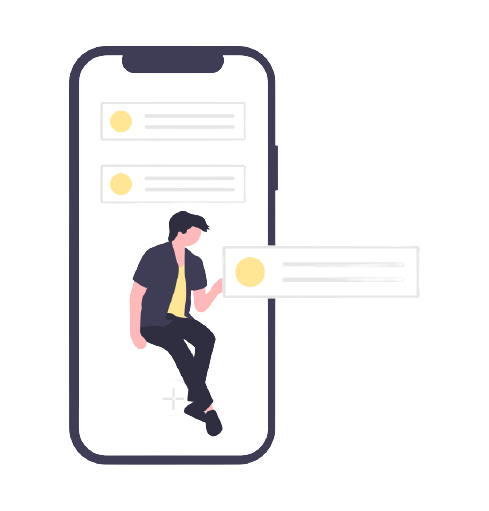

LOGO
Make your daily task lorem
your daily task lorem
In this platform you can add your daily task and also you can daily task and also you can edit whenever you want and lorem ipsdm dumb data


In this platform you can add your daily task and also you can daily task and also you can edit whenever you want and lorem ipsdm dumb data